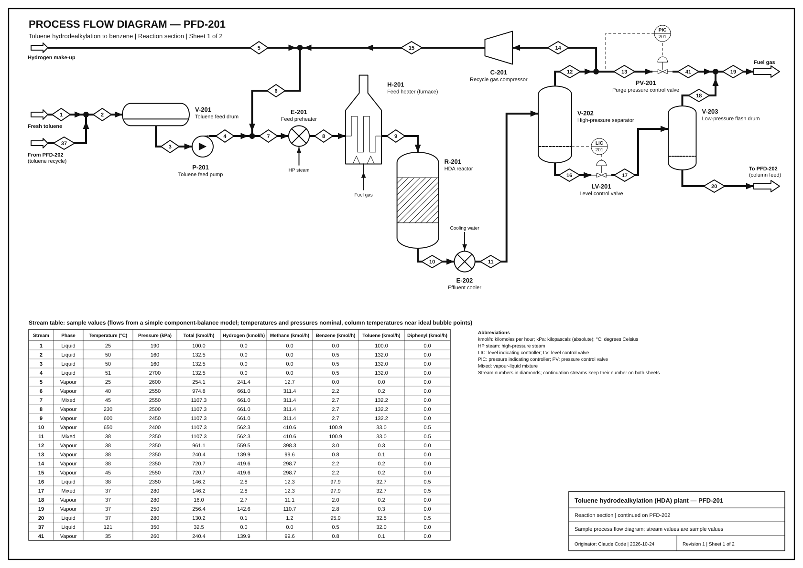
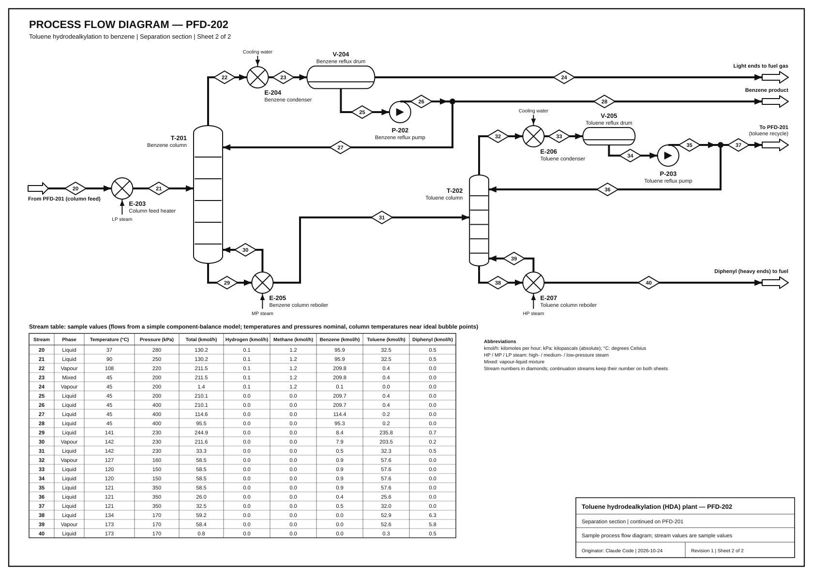

Sheet 1: PFD-201, reaction section

Sheet 2: PFD-202, separation section

Compliance record
Measured from the drawing geometry by verify.py (PFD-SPEC-001 section 12). Crossings Nc, total bends Nb, most bends on one stream bmax, total routed length Lt at final size, smallest clear spacing between parallel lines smin (limit: more than 10 mm).
| Sheet | Nc | Nb | bmax | Lt (mm) | smin (mm) | Hard failures |
|---|---|---|---|---|---|---|
| PFD-201 | 0 | 16 | 2 | 946 | 11.5 | 0 |
| PFD-202 | 0 | 12 | 2 | 1332 | 11.5 | 0 |
Hard-failure checks run on both sheets: topology (edge list re-derived from the drawn line end points and compared with the frozen topology), port axis and final straight, junction dots, arrowheads at inlets, jogs, parallel spacing, stream numbers against stream-table rows, label overlaps and line transits on the rendered page, and all 29 unit balances plus the overall carbon and hydrogen balance recomputed from the displayed table values.
Symbol variants
| Item | Service | Annex A entry | Library key |
|---|---|---|---|
| V-201 | Toluene feed drum | A.8 | vessel_1 |
| P-201 | Toluene feed pump | A.3 | pump_1 |
| E-201 | Feed preheater | A.6 | heat_exchanger_1 |
| H-201 | Feed heater (furnace) | S5 addition (provisional) | fired_heater_x |
| R-201 | HDA reactor | S5 addition (provisional) | packed_reactor_x |
| E-202 | Effluent cooler | A.6 | heat_exchanger_1 |
| V-202 | High-pressure separator | A.7 | flash_1 |
| C-201 | Recycle gas compressor | A.4 | compressor_1 |
| LV-201 | Level control valve | A.12 | control_valve_1 |
| PV-201 | Purge pressure control valve | A.12 | control_valve_1 |
| V-203 | Low-pressure flash drum | A.7 | flash_1 |
| E-203 | Column feed heater | A.6 | heat_exchanger_1 |
| T-201 | Benzene column | A.9 | scds_1 |
| E-204 | Benzene condenser | A.6 | heat_exchanger_1 |
| V-204 | Benzene reflux drum | A.8 | vessel_1 |
| P-202 | Benzene reflux pump | A.3 | pump_1 |
| E-205 | Benzene column reboiler | A.6 | heat_exchanger_1 |
| T-202 | Toluene column | A.9 | scds_1 |
| E-206 | Toluene condenser | A.6 | heat_exchanger_1 |
| V-205 | Toluene reflux drum | A.8 | vessel_1 |
| P-203 | Toluene reflux pump | A.3 | pump_1 |
| E-207 | Toluene column reboiler | A.6 | heat_exchanger_1 |
H-201 and R-201 have no Annex A entry. They are drawn with project-local symbols added under requirement S5, in a conventional form. These two symbols have not been checked against ISO 10628-2. The library marks vessel_1 (V-201, V-204, V-205) as Conditional in its own verification record.
Basis of the stream values
- Fresh toluene 100.0 kmol/h. Hydrogen make-up is 95 mol% H2 and 5 mol% CH4, sized so that H2/toluene = 5 at the reactor inlet.
- Reactions T + H2 → B + CH4, with toluene conversion per pass 0.75, and 2 B → D + H2, with extent 0.005 × the first extent.
- Purge: 25 % of the high-pressure separator vapour, let down through PV-201 to the fuel-gas header. The separators and the V-204 vent use fixed fractions of each component to the vapour.
- Columns: fixed recoveries to the distillate. Reflux ratio 1.2 (T-201) and 0.8 (T-202). Boil-up total equals the overhead vapour total, with composition proportional to relative volatility × bottoms composition.
The model runs twice: once in floating point and once in integer tenths of kmol/h, where every split is rounded and its last outlet is taken by difference. Every displayed balance therefore closes exactly. The two runs differ by at most 0.77 kmol/h on any stream and component. Temperatures and pressures are nominal sample values. The column temperatures are set within 1 °C of the ideal-solution bubble point of the displayed composition (Raoult's law with Antoine constants for benzene and toluene; diphenyl treated as non-volatile). The vent's benzene content stays below the limit set by benzene's vapour pressure at 45 °C (29.8 kPa).